David Koh
dkoh7
Computer Graphics 600.357
Compiler: gcc, Environment: vim, Platform: Ubuntu
Late Days Used: 0
All filters were implemented, except for a few for the "warp" function.
I wasn't sure if I was doing it correctly.
Help was received from the TA's during their hours,
and lecture slides and notes. Thanks!
Noisify:
|
|
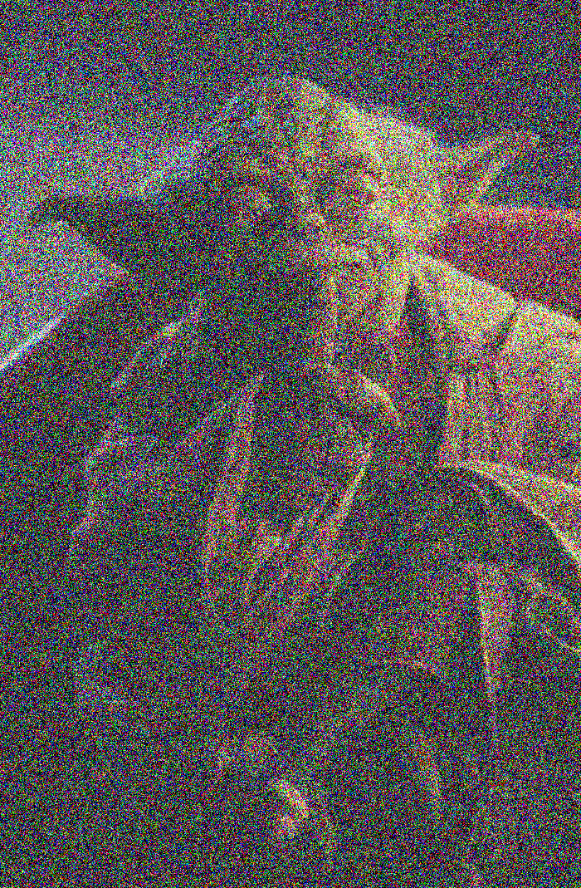 |
--noisify .2 |
--noisify .5 |
--noisify 1 |
Brighten:
|
 |
 |
--brighten .2 |
--brighten .5 |
--brighten 1 |
Gray:
Contrast:
|
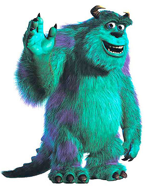 |
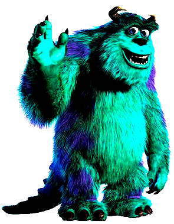 |
--contrast .2 |
--contrast .5 |
--contrast 1 |
Saturate:
| 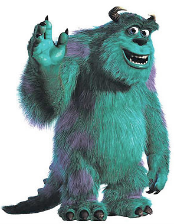 |
|
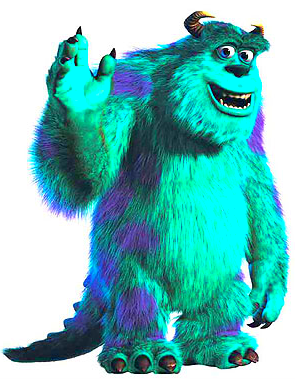 |
--saturate .5 |
--saturate 1 |
--saturate 2 |
Random Dither:
| 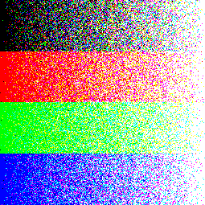 |
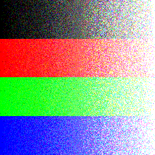 |
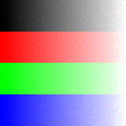 |
--rdither 1 |
--rdither 2 |
--rdither 4 |
oDither2x2:
| 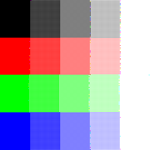 |
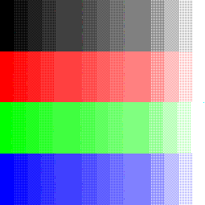 |
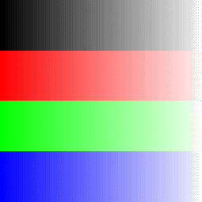 |
--odither 1 |
--odither 2 |
--odither 4 |
Floyd-Steinberg Dither:
| 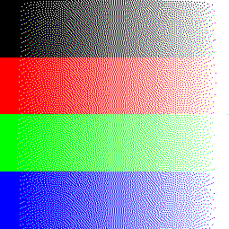 |
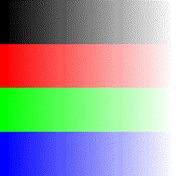 |
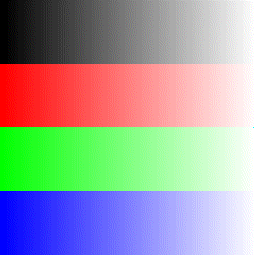 |
--fsdither 1 |
--fsdither 2 |
--fsdither 4 |
Composite:
| 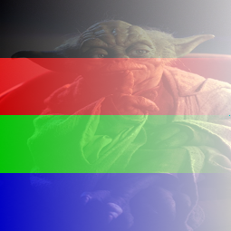 |
--composite, used yoduh.bmp (source),
ramp.bmp (composite),
and matte.bmp(matte) |
Crop:
|
|
|
--crop 100,100,300,300 |
--crop 200,200,500,500 |
--crop 200,200,500,900 |
Scale Nearest:
| 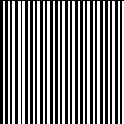 |
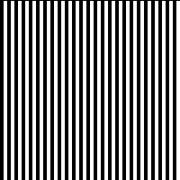 |
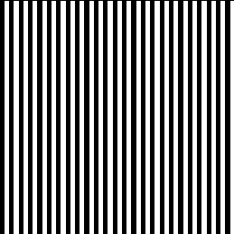 |
--scaleNearest .7 |
--scaleNearest 1 |
--scaleNearest 1.3 |
Scale Bilinear:
| 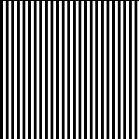 |
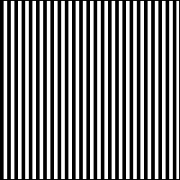 |
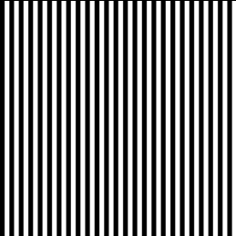 |
--scaleBilinear .7 |
--scaleBilinear 1 |
--scaleBilinear 1.3 |
Scale Gaussian:
| 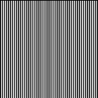 |
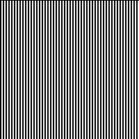 |
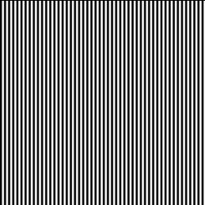 |
--scaleGaussian .7 |
--scaleGaussian 1 |
--scaleGaussian 1.3 |
Rotates:
|
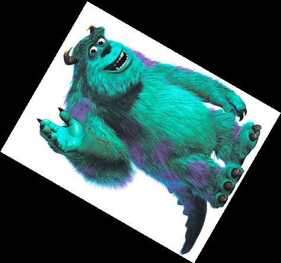 |
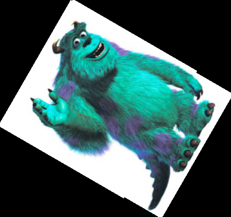 |
--rotateNearest 30 |
--rotateBilinear 30 |
--rotateGaussian 30 |
Blur 3x3:
Edges 3x3:
| 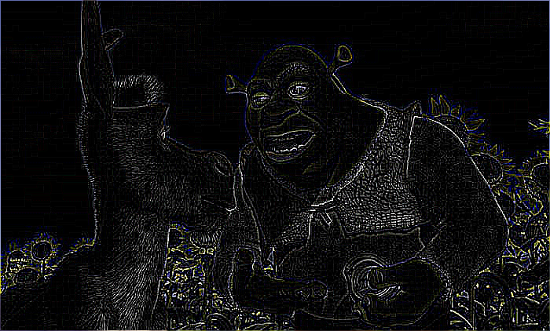 |
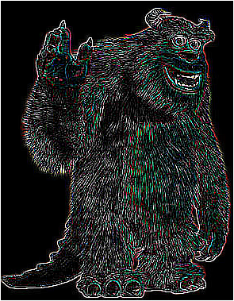 |
--edges3x3 |
--edges3x3 |
Fun:
Gif (Noisify):
 |
--noisify (0.1-1.0) |
Art Competition:
|
(yoda)
--fun,
--contrast 2,
--saturate 2 |